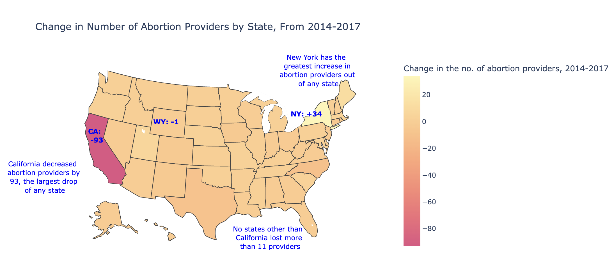
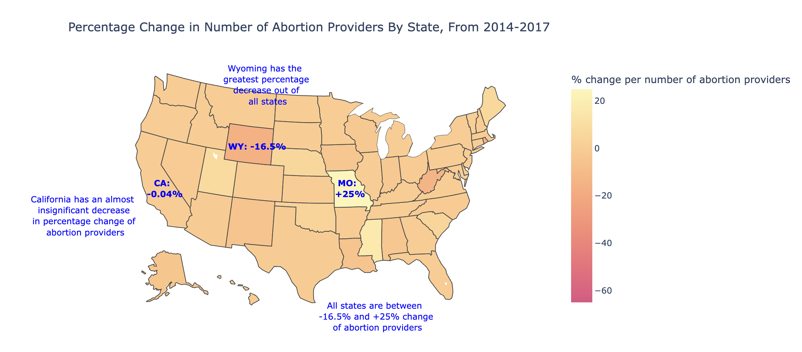

Proposition: California was the Only State to Drastically Decrease Abortion Providers from 2014-2017
FOR the Proposition

Design Decisions and Rationale:
- I used absolute change in number of abortion care providers to emphasize the large magnitude of California's decrease in abortion providers. With a decrease of 93, California lost far more abortion providers than any other state, in terms of raw counts. (Score: -0.5)
- I used a sequential color scale, since there was no meaningful midpoint in the data. This choice allowed me to show a smooth gradient of change and effectively emphasize California’s dramatic drop. I also did not alter the midpoint of the color scale in this color scale, so it reflected the median change in the number of abortion providers from 2014-2017. (Score: +2)
- Rather than use a discrete color scale, I chose to use a continuous one to obscure smaller variations between all other states that were not California. This was a deceptive choice, as it flattened differences across states with smaller changes, exaggerating California’s outlier status. The result made California seem like not only the largest drop, but the only significant one. (Score -1)
- I titled the visualization accurately and clearly, ensuring that viewers were not misled about the content. (Score: +2)
AGAINST the Proposition

Design Decisions and Rationale:
- I used percentage change in number of abortion providers to downplay California’s dramatic drop. While California lost 93 providers (a substantial raw decrease) presenting this as a percentage made it appear less severe due to California’s large starting number. This diminished the perceived significance of California’s drop. (Score: -0.5)
- I applied a data transformation by dividing the percentage change from 2014 to 2017 by the absolute number of providers in 2017. This produced a new metric: relative change per remaining provider, and further minimized the effect of California's dramatic absolute change in abortion providers. This technique is especially deceptive, since I did not disclose this transformation to the audience in the visualization or its tile. (Score: -2)
- I used a continuous color scale to make most states appear a similar hue, and altered the midpoint of the color scale to make this hue similar to most of the states in the first graph (excluding California). This gave the impression that percentage changes across states were mostly uniform, and created an illusion of overall stability. Overall, this design choice further minimized California’s outlier status. (Score: -2)
- I titled the visualization in a misleading way, choosing the generic label “Percentage Change in Number of Abortion Providers.” This implied I was using the direct percentage change metric from the dataset ("% change in the no. of abortion providers, 2014-2017"), when in fact I had created and used a transformed version. My choice of title obscured the true complexity of the data, and concealed a major transformation that changed the meaning of the visualization. (Score: -1.5)
Final Reflection
Throughout the process of creating these two visualizations, I discovered how thin the line can be between earnest and deceptive design choices. Choosing to highlight either absolute or percentage changes in abortion providers exemplified this, as neither approach tells the full story. The absolute change map emphasizes California’s dramatic loss of 93 providers but ignores the fact that California still retained the majority of its providers. On the other hand, the percentage map minimizes California’s drop by comparison, despite the sheer volume lost. Ultimately, showing both perspectives is crucial to provide viewers with a complete and honest understanding.
That said, some of my design choices were clearly deceptive. Altering the midpoint of the color scale in the second map gave the misleading impression that most states experienced no real change, when in fact most saw a decline. Using a continuous rather than a discrete color scale further exaggerated the contrast by grouping most states together visually and isolating California. Additionally, I intentionally did not disclose a data transformation I applied in the second visualization, which further minimized California’s drop in abortion providers.
This project has led me to associate “ethical analysis and visualization” with transparency with the viewer. I noticed that the main similarity among all of my most deceptive techniques was that they all concealed important information from the viewer. I’ve found that the boundary between “acceptable” and “misleading” persuasive choices is not as much about specific techniques as it is about openness and disclosure.